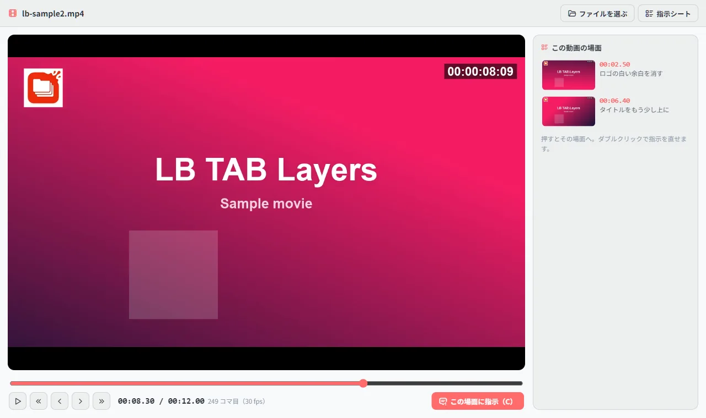

サイドパネルの「修正」→「手元の動画ファイルを開く」で画面を開き、動画ファイルをドラッグします。, と . で1コマずつ送り、直したい場面で C を押して文を書き、Enter で保存すると再生が続きます。場所を示したいときは D で、同じ画面のまま番号ピンや矢印を書けます。ファイルはブラウザの中だけで再生し、どこにも送りません。
📌 修正指示は、3.0.4 から使えます。この記事の画面とボタンの名前は、3.0.5 のものです。PRO の機能ですが、お試し期間中はすべて使えます。
公開前の動画は、まだどこにも上げたくないものです。確認のためだけにアップロードして、URL を配って、終わったら消す。その手間をなくすために、手元のファイルをそのまま開いて書ける画面を用意しました。
開き方
- Alt+T（Mac は Option+T）でサイドパネルを開き、「修正」を押す
- 「手元の動画ファイルを開く」を押す
- 開いた画面に、動画ファイルをドラッグする（「ファイルを選ぶ」でも開けます）
ファイルはブラウザの中だけで再生します。当社にも、ほかのサービスにも送りません。
キーは5つ
| キー | できること |
|---|---|
| Space（または K） | 再生／一時停止 |
| , と . | 1コマ戻す・送る |
| C（または S） | 止めて、文で書く → Enter で保存して再生 |
| D | 止めて、同じ画面のまま絵に書き込む → Ctrl+Enter で保存して戻る |
| Esc | 書くのをやめる |
YouTube などブラウザの動画の「修正モード」と、同じキーです。どちらで覚えても、もう片方でそのまま使えます。
コマを合わせてから書く
「この文字が出る1コマ前で切ってほしい」のような指示は、コマが合っていないと伝わりません。, と . で1コマずつ送って、そのコマで C を押します。コマの速さ（1秒あたりのコマ数）は自動で測ります。
撮られる画像は、画面に映っている大きさではなく、動画の元の大きさです。細かい文字やノイズの指摘も、拡大して確かめられます。
書いたあと
- 右の欄に、書いた場面が時間の順に並びます。押すとその場面へ移ります
- 鉛筆を押すと、文だけを直せます。ダブルクリックで絵の書き込みを開きます
- いらない場面はゴミ箱へ。すぐなら「元に戻す」で戻せます
- 右上の「終わる」で、この画面を閉じて、開く前に見ていたタブへ戻ります
たまった指示は、指示シートからテキスト・PDF・PowerPoint などで書き出せます。
【実体験】初稿は、上げる前に見たい
編集から書き出したばかりの初稿は、まず社内で見ます。この段階の動画を、確認のためだけに共有サービスへ上げるのは気が進みませんでした。手元のファイルをドラッグして、1コマずつ送って、C と Enter で書く。編集ソフトで見ているときと近い手ざわりで指示を書けるように、と考えて作った画面です。
知っておきたいこと
- 開ける動画：MP4（H.264）・WebM など、Chrome で再生できる動画です。ProRes は再生できないので、確認用に MP4 で書き出してください
- 保存されるもの：止めた場面の画像と指示です。動画ファイルそのものは保存しません
- 保存先：このパソコンのブラウザの中です。どこにも送りません
- プラン：PRO の機能です。お試し期間中はすべて使えます
🎬 修正指示のほかにも、いろいろできます。パネルを開く、保存したタブを開く、閉じたタブを履歴から戻す、ページにひもづけたメモ、ピンバーまで。ブラウザとパネルの動きをそのまま見られる 操作ガイド（動く画面で見る10の操作） にまとめています。入れたばかりの方は クイックチュートリアル（5分） からどうぞ。
よくある質問
Q. 手元の動画ファイルを、アップロードせずに確認できますか？
はい。サイドパネルの「修正」→「手元の動画ファイルを開く」で開く画面に、ファイルをドラッグします。ブラウザの中だけで再生し、どこにも送りません。
Q. 1コマずつ送れますか？
送れます。「,」で1コマ戻し、「.」で1コマ送ります。コマの速さは自動で測ります。
Q. どの形式の動画を開けますか？
MP4（H.264）・WebM など、Chrome で再生できる動画です。ProRes は再生できません。
Q. 撮られる画像の大きさは？
動画の元の大きさで撮ります。画面に小さく映していても、元の解像度のコマが残ります。
Q. 確認が終わったら、どう戻りますか？
右上の「終わる」を押すと、この画面を閉じて、開く前に見ていたタブへ戻ります。書きかけの文があるときは、閉じずに知らせます。
▶ 実際の操作を動画で見る
サイドバーで、ブックマークとタブをいっしょに管理する様子です。